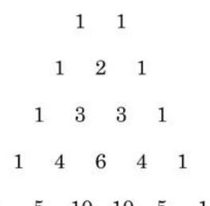
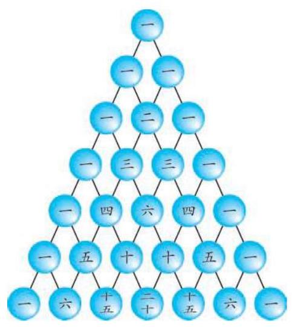

例题 1
例 1 求 的二项展开式.
答案与解析收起 / 展开
解 由二项式定理, 的二项展开式是
教师整合版 / 沪教版高中数学
选择性必修第二册
第6章计数原理 · 保留教材主线与原题
教材与正式教参整合
我们知道,对于任意的 ,都有
在 的取值不大的情况下,也可以利用下面的数阵求 的二项展开式中各项的系数:

这个数阵的特点是: ①每一行的第一个数和最后一个数都是 1 . ②每一行中, 除了第一个数和最后一个数外, 每个数等于它"肩上"的两个数之和. ③当 为偶数时,最大的系数是中间一项; 当 为奇数时,最大的系数是中间两项.
在我国数学家杨辉于 1261 年所著的《详解九章算法》中出现了类似的图表(类似于图 6-5-1)，习惯上称之为杨辉三角，杨辉在该图旁注明 "贾宪用此术"，故亦称贾宪三角. 它是中国古代数学的杰出研究成果之一.
请将特点①和特点②用组合数的公式表示.
杨辉, 字谦光, 钱塘(今杭州)人。中国南宋末年数学家、 数学教育家. 约在 13 世纪中叶至后半叶活动于苏、杭一带.

图 6-5-1
一般地, 我们有下面的
定理 设 是正整数,等式
证明 当 时,
假设 ( 为正整数)时,
则当 时,根据多项式的乘法运算规则,有
从而由性质 和 ,得
西方称类似表格为帕斯卡三角形.
在讨论二项式定理相关内容时, 我们约定 .
所以,由数学归纳法,对于 和正整数 ,都有
例 1 求 的二项展开式.
解 由二项式定理, 的二项展开式是
例 2 求 的二项展开式中 项的系数.
解 由二项式定理, 的二项展开式中的第 项为 ,其中 . 令 ,得 项的系数是 .
例 3 利用 的二项展开式,证明: 是 7 的倍数.
(2)求 的二项展开式中的常数项；
(3)求 的二项展开式中 的系数；
(4)在 的二项展开式中，如果第 项和第 项的系数的绝对值相等,求此展开式的第 项.
例 4 已知对任意给定的实数 ,都有
求值:
(1) ;
(2) .
例 5 证明: 在 个组合数 中, 当 为偶数时,最大值是中间的一项 ; 而当 为奇数时,最大值是中间的两项 和 .
证明 对于任给的 ,有
在二项展开式中代入适当的特殊值, 会得到一些与组合数有关的特殊的恒等式.
由于 且 ,因此当 即 时, ; 而当 时, .
若 为偶数,则当 时,
而当 时,
所以,当 为偶数时,最大值是中间的一项 .
若 为奇数,则当 时,
当 时, ,即 ; 而当 时,
所以,当 为奇数时,最大值是中间的两项 及 .
例 6 求 的二项展开式中系数最大的项.
解 对 ,展开式的第 项是 . 设这一项的系数为 ,就有 . 显然, .
因此,对于 ,就有
所以,当 时, 成立,即 ; 当 时, ,即 ; 而当 时, 成立,即 .
因此，系数最大的项是第 12 项 和第 13 项 ,其中 .
(2)已知 , 为正整数),求 的值.
2.(1)求 的二项展开式中系数最大的项；
(2)求 的二项展开式中系数最大的项.